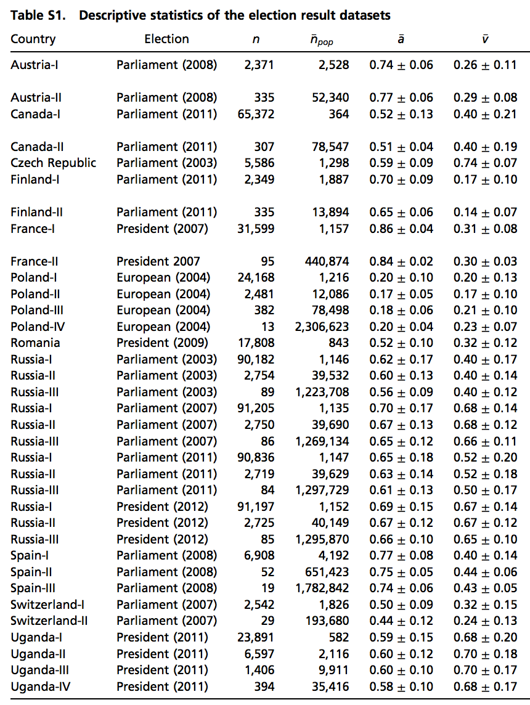
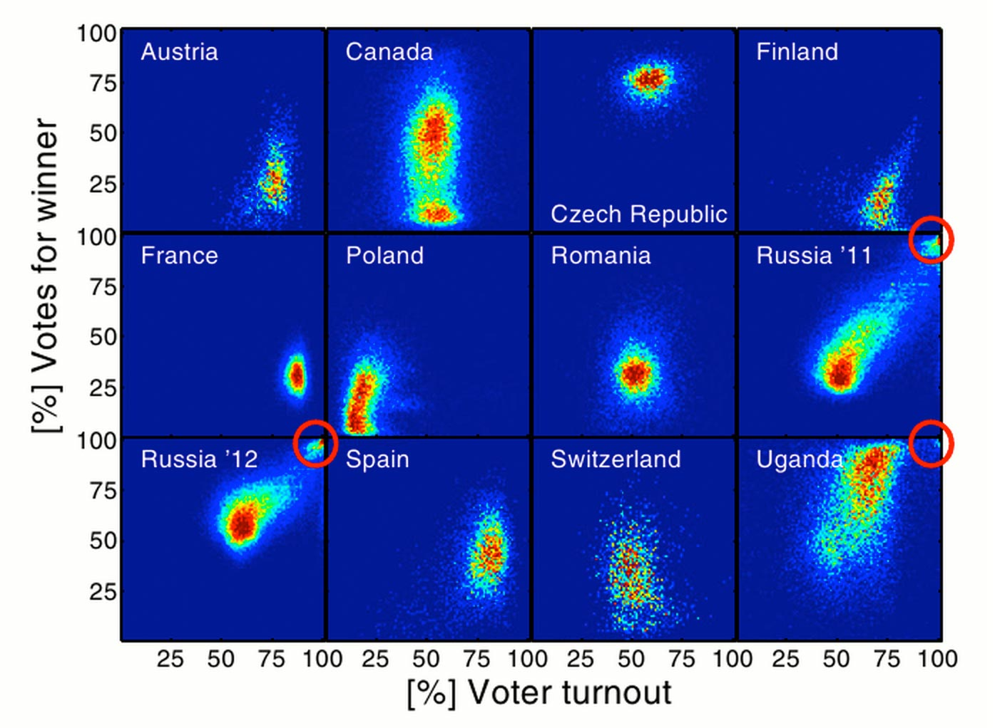
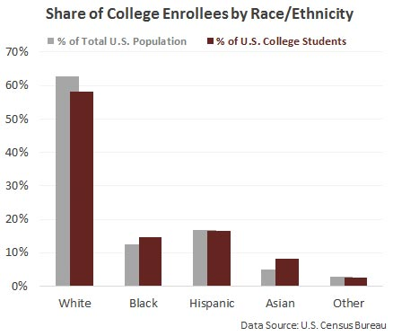
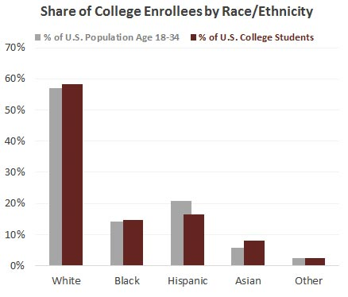
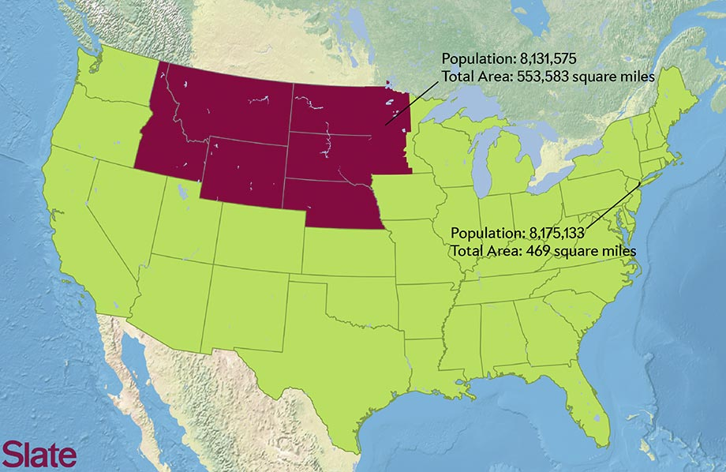
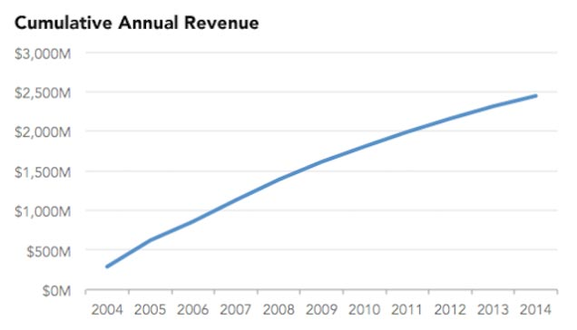
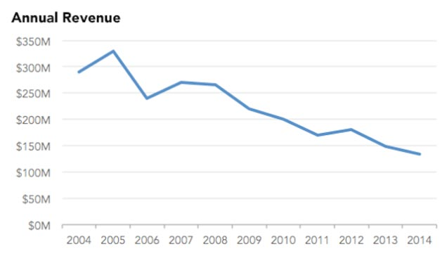
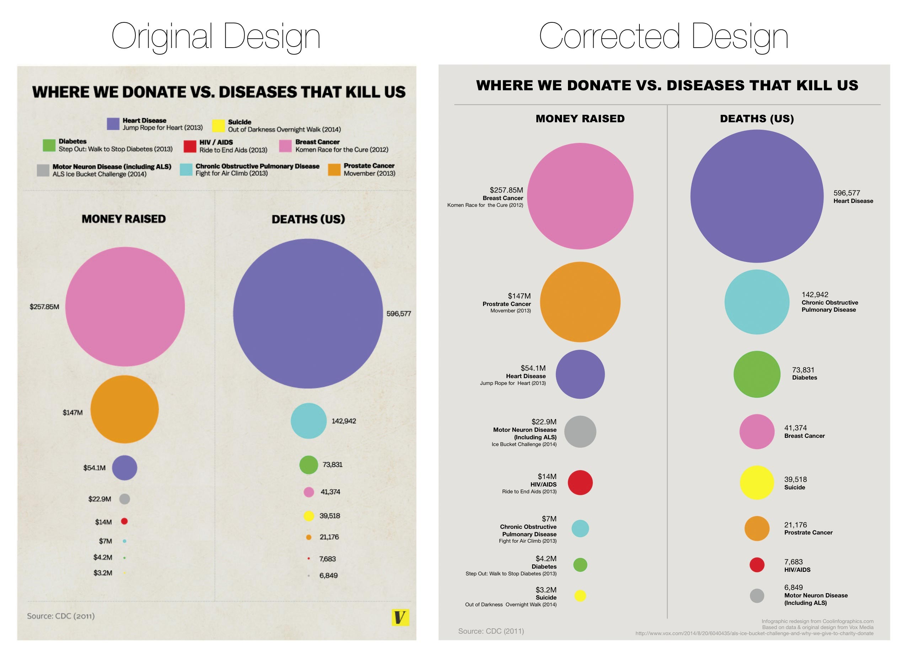
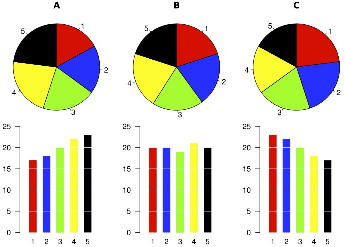

Designing Data Stories
Slides: dc.riot.industries
Story = idea × persuasion .
Persuasion is a centerpiece of business activity.
- Customers must be convinced to buy your product
- Investors must be convinced to buy (or sell) your stock
- Partners and employees must be convinced to come on board with strategic decisions
Some people mislead in order to persuade.
But they're jerks. Don't be a jerk.
Persuade the right way: back your narrative up with data.
If they matter, people you tell your story to will have questions.
And their questions will lead to more questions.
- "How much money will your product make me?"
- "How's that compare to your competitor's product?"
- "How does that map out between cohorts?"
Data Stories are more about being able to answer questions than they are about telling a single narrative.
(Your business is not an Op-Ed piece)
Why do we care about Data in our Stories?
1. Some of our questions have conflicting answers.
- It is a foregone conclusion that someone selling you something has an unobjective bias toward their product.
-
In the name of persuasion, some sources are simply unreliable. Sometimes they look like the wrinkle ad from before. Other times they require analysis.
- Data lets us explore, lets us fact-check.
Data makes critical thinkers of us.
2. Sometimes we ask the wrong questions.
- We might ask "How many customers did you have in October?"
- We probably means "How many customers did you have in October, relative to September" or "relative to last October"
Data answers the questions we didn't know we had.
3. Sometimes the answer to a simple question is unsatisfying.
- Q: How many Californians relocated from outside the USA?
- A: About 28%
- Okay but...
- Q: Where do the other 78% come from?
- Q: What about Californians who leave? Where do they go?
- Q: How does this compare to last year? to 100 years ago?
- Q: How does this compare to the US as a whole? To any given state?
- nytimes.com/interactive/2014/08/13/upshot/where-people-in-each-state-were-born.html
4. Sometimes there are many distinct narratives to explore.
Data makes story-tellers of us all
So, is providing Data enough?

Anscombe's Quartet
Statistical Detection of ... ?
Statistical Detection of Election Fraud
Data is only valuable when it is understood
So, when I see a Visualization, can I be sure that the Data Story I'm being told is correct?
- Not always! Be critical.
- Mark Twain's 3 kinds of lies:
"Lies, Damned Lies, and Statistics".
 Avoid these common deceptions when designing data stories:
1. Maps as population indicators
NYC has ~ the same population as the shaded area
2. Cumulative Time-Series Charts
 3. Circles in general.
We're meant to see area; we commonly just see height.
4. Pie charts when dealing with close values
(Bar charts are boring but we're really really good at reading them)
5. Bar charts with arbitrary axis points
But the most important thing you can do when telling a Data Story is...
Provide your data!
- Doesn't matter if you're making a sale or writing journalistically.
- In raw format preferably. Let people tinker with it!
- You'll get called out if you're wrong about something but that helps you grow!
- Most importantly, it allows for critical thought and makes us all more informed.
Thanks!
Slides: dc.riot.industries